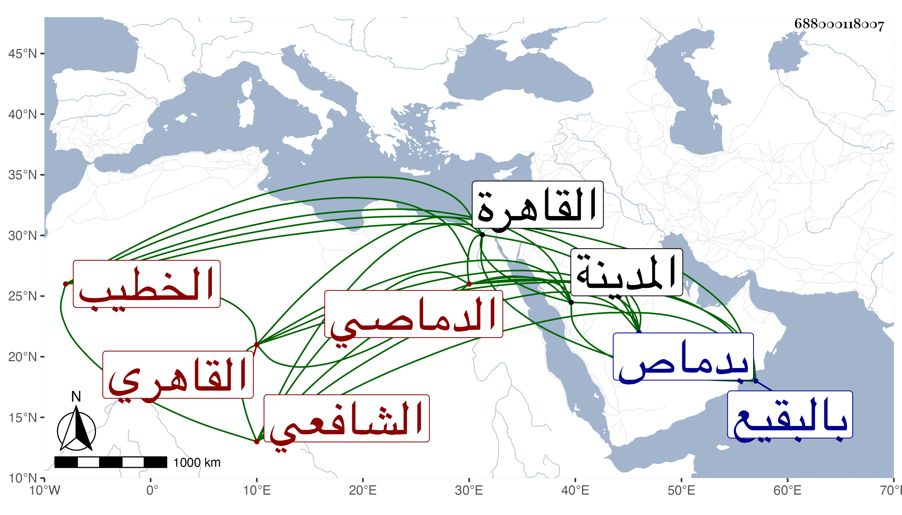

0902Sakhawi.DawLamic.ITO20230111-ara1.EIS1600.688000118007
Biography ID: 688000118007
1037
علي بن محمد بن عبد الله بن محمد بن مجاهد نور الدين الدماصي ثم القاهري الشافعي الخطيب أخو عبد الله الماضي ويعرف بالدماصي . ولد في سنة خمس وعشرين وثمانمائة تقريبا بدماص ونشأ بها فقرأ القرآن عند أخيه وخطب ببلده ثم قدم القاهرة قريبا من سنة ست وستين وأثبت عدالته عند أبي البركات الغراقي ولكنه لم يجلس لذلك بل تصدى لتعليم الأطفال والتأذين بجامع الغمري بل وأم به في بعض الأوقات وخطب بشبرا الخيمة وقتا وكذا بجامع الأزهر وحمدت خطابته لتحريه تصحيحها على الزين الأبناسي وكاتبه وكان يكثر مراجعته لي فيما يؤديه فيها من الأحاديث إلى أن اشتهر بذلك ونزله ابن مزهر في صوفيته به ثم حج هو وزوجته لقضاء الفرض مع الموسم ورجعا إلى المدينة النبوية للزيارة فانقطعا بها ، وتنزل هو في سبع خير بك ولم يلبث أن توعك واستمر إلى أن مات في عشري شوال سنة أربع وثمانين ودفن بالبقيع رحمه الله فقد كان خيرا متوددا .
